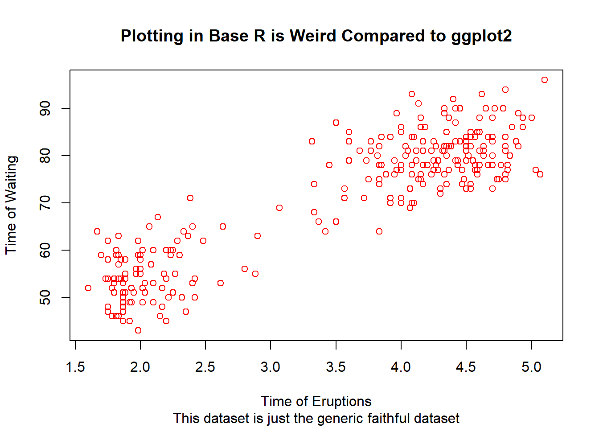

It’s been awhile since I’ve written in this little project, partially due to finishing up my research internship in Panama (image right: one of our experimental islands, as viewed from the little metal boat we used to jet around in Lake Gatun) and partially due to my computer getting humidity damage and not having enough memory to serve the blog on my replacement computer.
This semester, I’m finally (finally!) taking MATH 345 - Probability and Statistics - to bulk up my stats skills. We’ve been doing a lot of coding in R, which is super exciting, looking at data from recent elections and making some simple graphs using the built-in faithful dataset. It’s interesting because to be quite honest I am not the best at plotting with base R as compared to ggplot2, but when Tidyverse isn’t available, I feel it’s definitely going to be good to know how to do both. Plus my professor actually comments his code and sends it to us before the class so we can look at it. (I never comment my code…I should probably be better about that.)
plot(faithful, xlab="Time of Eruptions", ylab="Time of Waiting", main="Plotting in Base R is Weird Compared to ggplot2", sub="This dataset is just the generic faithful dataset", col="red") For new things that are in the works, I’m planning on doing more text analysis of my favourite albums (possibly Wasteland, Baby by Hozier), tracking attendance to different classes at different times, and also revisit my commute tracker, which I’ve now expanded and improved upon since last semester. I’ll also probably throw up some more graphs from Probability and Statistics as they come.
Please stay tuned for some such exciting updates!